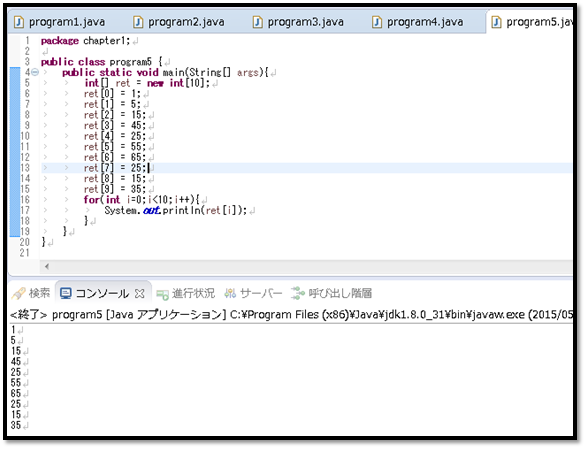
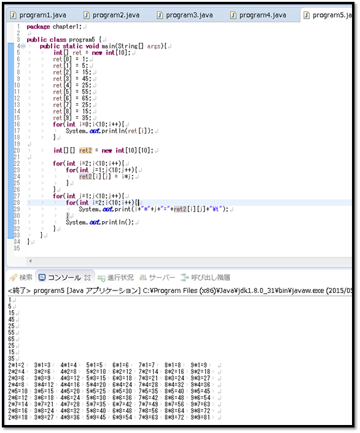
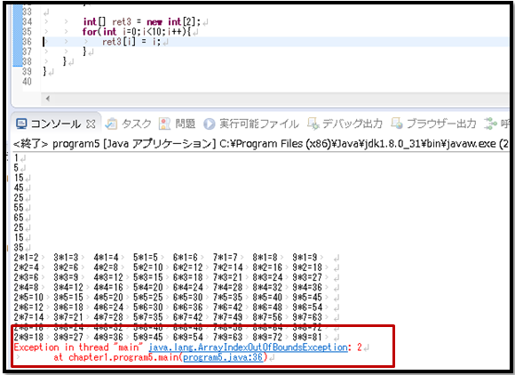
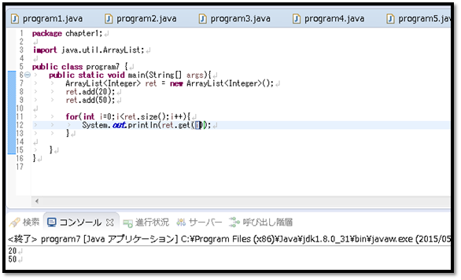

こんにちは。明月です。
配列は変数を一つのデータタイプで集まりの概念だと理解しやすいと思います。
資料構造的にお話すると「同じデータタイプのデータを連続的に格納するような資料構造的な変数」という正義していますね。例えば「int」タイプの変数が「100」個が必要な時、配列がなければ変数名を「100」を作成して宣言する方法があります。
では実際にそんなに作業すると作業が大変です。配列の場合はもっとしやすく、少ないコーディングステップで運用ができます。
OOPの本を見ると配列の正義で「メモリ構造上で配列の場合は連続的に割り当てるので、処理時間を改善することができます。」ということになりますが、最近はハードウェアのスペックの発達でパフォーマンス改善より可読性ため使うことが多いですね。
配列は「new」キーワードで宣言します。「new」キーワードは配列宣言よりクラスの割り当てることの意味が強いので「class」のパートで詳しく勉強します。
データタイプ[] 変数名 = new データタイプ[配列サイズ]

「int」タイプの「ret」の変数に配列を「10」個を宣言しました。そして、配列でデータを入力して出力する例ですね。入力時には各配列の番号で一行目ずつにデータを入力しましたが、出力する時には「for」を利用してイタレーションパタンで出力しました。
link - [Java スタディ - 6] 制御文 - ループ (for, while, do~while)
配列は上の例みたいに普通は一次元的に配列を使いますが、二次元、多次元的な配列も存在しています。

上の例を見れば変数名「ret2」に「[10][10]」の二次元配列を宣言して「int」のデータが全て「100」個を入るような変数を宣言しました。
二次元配列から「10」個ずつ「10」個のデータがあることになるので、「10」掛け「10」になります。三次元で「[10][10][10]」は「10 x 10 x 10」で「1000」個になります。
上の例で「for」の中で「for」を使って「九九」乗算表を配列に入力して出力しましたね。
そうすると我々が配列を「2」を宣言してその以上のデータを入力するとどのようになるかな？

「IndexOutOfBoundsException」、すなわちオーバーフローが発生します。
そうするといつも配列を使う時に固定な配列個数を決めて静的に使う方しかないかな？と言えば、動的に配列を宣言する方法もあります。
ArrayList<データタイプ> 変数名 = new ArrayList<データタイプ>();

上の例を見ると「ret」と言う動的な配列を宣言しました。確かに、先に配列個数を決めてないです。
そこで「add」関数を利用してデータを追加します。「size」関数を利用して配列の個数を取得して「get」の関数を利用してデータを出力しています。
確かに上の静的な配列より楽に見えますね。
ではここには「List」を動的な配列に紹介しますが、「List」と「Map」型は簡単に動的な配列とは言えません。「List」と「Map」は資料構造と関係があるので、勉強が少しすすめると詳しく勉強します。
- [Java] thisとsuper2019/08/23 19:46:10
- [Java] クラス継承2019/08/22 20:08:37
- [Java] new2019/08/22 00:06:20
- [Java] Static2019/08/20 23:46:23
- [Java] アクセス修飾子2019/08/20 00:42:04
- [Java] クラス(Class)2019/08/07 20:53:34
- [Java] 関数 (メソッド、Function)2019/08/06 20:22:48
- [Java] 配列(Array)2019/08/05 23:22:58
- [Java] 制御文 - ループ分岐 (break, continue)2019/08/02 22:45:42
- [Java] 制御文 - ループ (for, while, do~while)2019/08/01 20:40:40
- [Java] 5. 配列とリスト(List)、マップ(Map)の使い方2019/07/26 23:25:58
- [Java] 4. 制御文2019/07/25 23:37:36
- [Java] 3. 演算子2019/07/25 23:38:36
- [Java] 2. 変数と定数の宣言方法、そして原始データタイプとクラスデータタイプの差異2019/07/24 23:12:32
- [Java] 1. Javaとは？、Javaインストール、Eclipseインストール2019/07/24 23:03:21
- [Bootstrap] HTMLデザインのフレームワークのBootstrap紹介2020/07/30 19:06:36
- [Python] メール(smtplib)を送信する方法2020/07/27 18:38:43
- [Python] HttpConnection(requestsモジュール)でウェブサーバーで接続する方法2020/07/20 14:41:51
- [Python] Excel(openpyxl)を扱う方法2020/07/16 16:40:31
- [Python] ファイル圧縮、解凍(zipfile)する方法2020/07/14 19:14:22
- [Python] Apache cgiでPythonを使う方法2020/07/09 19:58:19
- [Python] Web serverを起動する方法(http.server)2020/07/09 00:13:13
- [Python] WebSocketを使う方法2020/07/07 17:29:18
- [Python] PythonとJavaのソケット通信する方法2020/07/03 18:35:50
- [Python] PythonとC#のソケット通信2020/07/01 19:28:22
- [Python] INI(環境設定ファイル)を扱う方法2020/06/30 18:26:01
- [Python] Jsonを扱う方法2020/06/29 19:18:15
- [Python] XMLファイルを扱う方法2020/06/26 19:18:14
- [Python] IOを利用してCSVファイルを扱う方法2020/06/25 18:20:30
- [Python] 21. データベース(mariaDB)を連結する方法2020/06/24 18:51:50